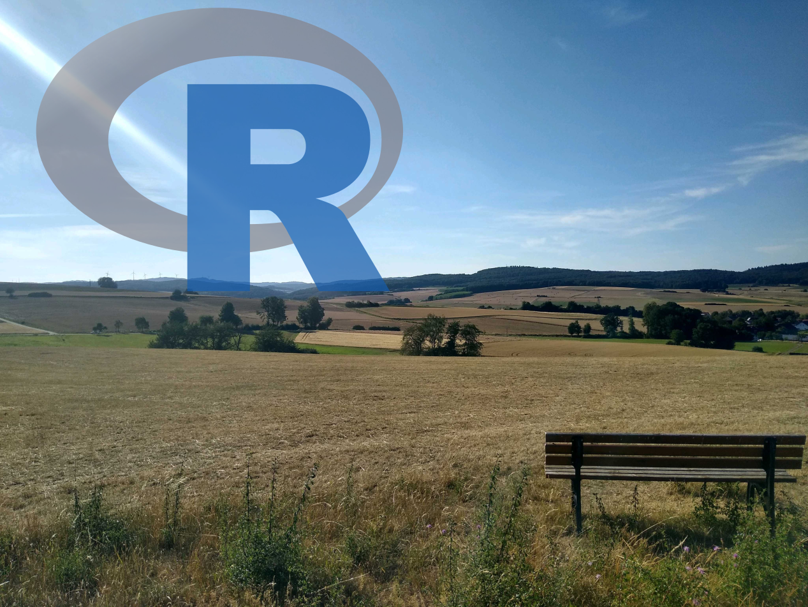

Analysis of Ecological Data with R
1 Welcome

Figure 1.1: Landscape Ecology with R
1.1 Target audience
- You want answers to questions (in landscape ecology)!
- Primarily ecologists but the methods and skills are useful in many fields.
- No R knowledge is required (or other programming skills)
- It is helpful if you know what a spreadsheet is
- Minimum amount of statistic needed (course explains all the necessary stuff)
1.2 Aims of this course
- Developing ideas, answering questions
- Defining steps how to solve a problem
- Translating these steps into R code
- Learning the R language “on the fly”
- Data handling. A lot of data handling.
- I believe a good understanding of data is one of the most important things in science and work.
- Learn statistics. Use statistics as a tool.
- developing good scripting and project management habits from the start (makes live so much easier)
1.3 What this course is not
- statistics as in mathematical equations
\[ \left( {\begin{array}{*{20}c} n \\ k \\ \end{array}} \right) = \frac{{n!}}{{k!\left( {n - k} \right)!}} \]
\[ \sigma ^2 = \mu _2 = \sum {\left( {x - \mu _1 } \right)^2 P\left( x \right)} \]
- R as in computer science
- You probably won’t find out anything you didn’t already know about nature
1.4 Course Outline 2022
| Date | Content |
|---|---|
| 07.04. | Organization - Topic Overview - What is R? - What is ecological data? |
| 14.04. | R foundations - functions - vectors |
| 21.04. | Aasee water monitoring - dataframes - data input - subsetting |
| 28.04. | Aasee water monitoring - strings - boxplots - comparisons |
| 05.05. | Aasee water monitoring - fish mortality - tidyverse |
| 12.05. | Aasee water monitoring - correlations - linear models |
| 19.05. | Biodiversity Data - Task and Tutorium (Vertretung) |
| 26.05. | —- Feiertag —- |
| 02.06. | Besprechung Task and Tutorium |
| 09.06. | —- Pfingstferien —- |
| 16.06. | —- Feiertag —- |
| 23.06. | Biodiversity Data |
| 30.06. | Visualizations - ggplot |
| 07.07. | Open Topics |
| 14.07. | Wrap up |